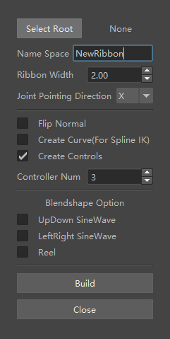

A Maya plugin that builds ribbon IK setups from a selected joint chain, replacing an error-prone manual process with a parameterised dialog.

Ribbon IK gives a limb or a tail smooth, volume-preserving deformation, but building one by hand is a long sequence of steps that has to be repeated identically for every chain: lofting the surface, generating follicles, creating and constraining controls, then wiring the blendshape options. Doing it twelve times for one creature is where mistakes get in.
I wrote the plugin so the setup becomes a single parameterised operation, and so the result is identical every time.
The interface is deliberately plain. Technical artists reach for a tool mid-task, so every option is visible at once rather than nested behind tabs, and the defaults produce a usable rig without changing anything.
I later taught a session on authoring tools like this one in Maya with Python and MEL for the Advanced 3D Pipeline course at the ETC.